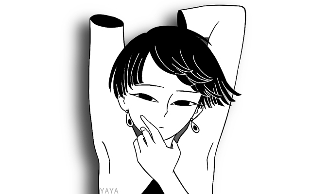

this page is a prayer.
早就忘记我本来是什么
是石头？还是星星？
there's a single house on an island in the middle of a lake, placid and grey beneath clouds where shards of light shine through like leaves. there's nothing else on this island but a short line of laundry billowing gently in the breeze. a train passes by every hour, its tracks barely submerged.
我迷路了。不知何故掉到这里。连自己身份都忘了。这样怎么回去呢...?
there's a single house on an island in the middle of a lake, placid and grey beneath clouds where shards of light shine through like leaves. there's nothing else on this island but a short line of laundry billowing gently in the breeze. a train passes by every hour, its tracks barely submerged.
我迷路了。不知何故掉到这里。连自己身份都忘了。这样怎么回去呢...?

a record of artifacts.

眉月：孤独之味
满月：变化万端

亏月：喜怒哀乐

新月：变化万千
"as the moon grows, the taste of loneliness like blood in my mouth. during the full moon, you can see from the way the light glistens: my body is not one object, but composed
of innummerable fragments, each containing a memory, and desire. as the moon starves, these fragments record every feeling; euphoria, nihilism, rage, tenderness; into an archive to take back with me,
when i can remember who i am. on the new moon, i am whole."
—世界上另一个我（假性者）
Pray! he roared. 祈祷！他大声叫。
Pray for your happiness! 为了你幸福，祈祷！ Pray for my return to nothingness! 为了我归虚，祈祷！ Pray, out of your love for me. 为了你爱我，求你祈祷...